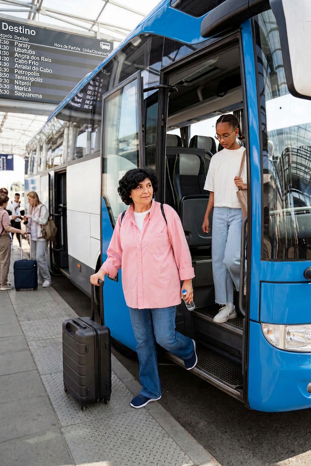
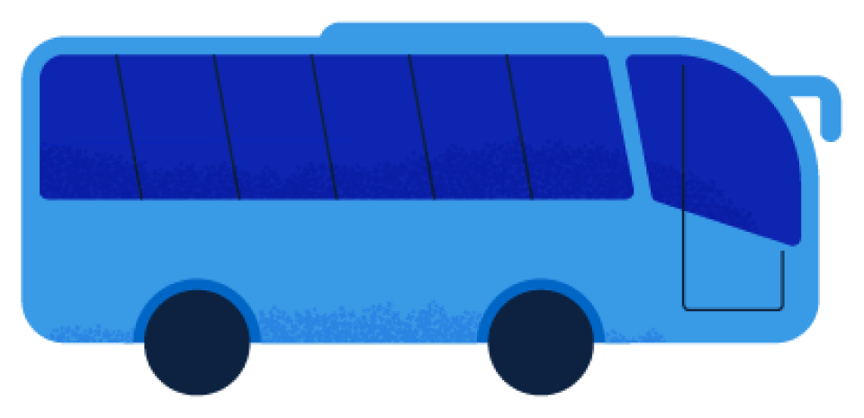

<!doctype html><html lang="pt-BR"><meta charset="utf-8"><link rel="stylesheet" href="../../skills/qp-brandbook/assets/fonts.css"><style>*{box-sizing:border-box}body{margin:0;background:#dfe5ed;font-family:Inter}header{padding:20px;max-width:960px;margin:auto;font-size:14px;line-height:1.6}.art{position:relative;overflow:hidden;width:720px;height:1080px;margin:auto;background:#0d2240}.band{position:absolute;padding:16px 22px;border-radius:8px 28px 8px 15px}img{display:block}[data-check]{font-synthesis:none}</style><header>Estudo de validação · qp-foto-percurso · Não é template oficial.<br>Novo trajeto vetorial e faixas com texto real; fotografia e sticker originais.</header><main class="art"><svg viewBox="0 0 720 1080" style="position:absolute;inset:0;width:100%;height:100%" aria-label="Percurso derivado das referências"><path d="M-30 340 C190 335,55 680,95 820 S420 1030,800 870" fill="none" stroke="white" stroke-width="9"/><circle cx="330" cy="972" r="17" fill="white" stroke="#ffcc00" stroke-width="9"/></svg><div class="band" style="left:45px;top:62px;width:610px;transform:rotate(-3deg);background:white;color:#0066c6;font:italic 400 42px 'Instrument Serif'">Seu próximo destino</div><div class="band" data-check style="left:58px;top:140px;width:610px;transform:rotate(-3deg);background:#0066c6;color:white;border:5px solid white;font:600 34px/1.1 'Bacalar Expanded'">COMEÇA COM VOCÊ.</div></main></html>